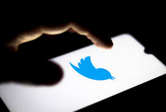

Perang Cuitan Elon Musk dan Pangeran Saudi Alwaleed Soal Saham Twitter
15 April 2022 Oleh (ryn/asa)
Mulanya Pangeran Alwaleed,seorang miliarder yang juga merupakan pemegang saham terbesar Twitter mengungkapkan dalam cuitannya bahwa ia akan menolak tawaran uang senilai U$41 miliar dari Musk untuk perusahaan tersebut.
"Saya tidak percaya bahwa tawaran yang diajukan oleh @elonmusk ($54,20) mendekati nilai intrinsik @Twitter mengingat prospek pertumbuhannya," cuit @Alwaleed_Talal pada Kamis (14/4).
"Menjadi salah satu pemegang saham Twitter terbesar & jangka panjang, @Kingdom_KHC & saya menolak tawaran ini," lanjut sang pangeran.
Beberapa waktu kemudian, Musk membalas cuitan pimpinan Kingdom Holding Company (KHC) tersebut. CEO Tesla ini mempertanyakan komitmen Arab Saudi dalam kebebasan berbicara.
"Menarik. Hanya dua pertanyaan, jika saya boleh [menanyakan]. Berapa banyak saham Twitter yang dimiliki Kerajaan, secara langsung & tidak langsung? Apa pandangan Kerajaan tentang kebebasan berbicara jurnalistik?" tanya Musk yang tidak dijawab Alwaleed hingga berita ini ditulis.
Arab Saudi disebut sering mengawasi dan menangkap wartawan. Berdasarkan laporan Reporters Without Borders, Arab Saudi menjadi salah satu negara terburuk di dunia untuk kebebasan pers.
Salah satu contoh kasus adalah pembunuhan brutal terhadap jurnalis Washington Post, Jamal Khashoggi, yang disetujuioleh Putra Mahkota Arab Saudi, Muhammad bin Salman, menurut intelijen AS.
Sementara itu, diberitakan sebelumnya, Musk mengajukan penawaran untuk membeli semua saham Twitter (TWTR) yang belum dia kuasai./p>
Menurut data pengajuan di Komisi Sekuritas dan Bursa AS (SEC), Kamis (14/4), Musk menawarkan untuk mengakuisisi semua saham di Twitter yang bukan miliknya seharga US$54,20 atau Rp778.282(kurs Rp14,359 per dolar AS) perlembarsaham.
"[Elon] mengajukan penawaran untuk membeli 100 persen [saham] Twitter dengan harga US$54,20 per saham dalam transaksi tunai dan kemudian menjadikannya [milik] pribadi," demikian dikutip dariForbes. Anggota Dewan Twitter sudah mengadakan pertemuan pada Kamis pagi untuk membahas tawaran Musk tersebut.